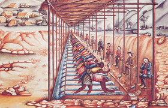

Lezione 15  L’indipendenza dell’America Latina
L’indipendenza dell’America Latina

«La popolazione bianca d’origine europea occupava ovunque i vertici della gerarchia sociale e controllava la politica e l’economia, la giustizia, le armi e la religione. Viveva inoltre in gran parte concentrata nei centri urbani. Al suo interno essa era però piuttosto eterogenea e tanto più lo divenne man mano che nuove ondate migratorie giunsero in America dalla penisola iberica nel corso dell’età coloniale.
Al nucleo originario di encomenderos, cioè dei conquistatori o dei discendenti che in un primo momento avevano ricevuto in dotazione dal sovrano un territorio comprensivo della popolazione autoctona che lo abitava, e col tempo trasformatisi in grandi proprietari terrieri che possedevano numerosi schiavi o indiani, s’aggiunsero via via nuove figure.
Tra di esse emersero col tempo gli artigiani, i funzionari e i professionisti, tutti organizzati in corporazioni che ne delimitavano i contorni, sancendone al contempo diritti e doveri. Numerosi, naturalmente, erano anche i bianchi dediti al commercio e all’attività mercantile in genere, oppure impiegati in numerose altre occupazioni minori. Il che faceva della società bianca il compartimento più alto di quelle società. Ma un compartimento a sua volta molto eterogeneo e differenziato. Tanto più che al suo interno divenne col tempo sempre più netta la distinzione tra creoli, nati in America e appartenenti alla società locale e peninsulares giunti in veste di funzionari. […]
La popolazione indiana era nettamente separata da quella bianca. Sia socialmente, essendo sottoposta a pesanti regimi di sfruttamento del lavoro, sia territorialmente, essendo perlopiù relegata ai margini delle città o nelle zone rurali. Ad essa era infatti comune riferirsi come alla Repùblica de los Indios.
Al tempo stesso, la popolazione indiana della Nueva Espana, quella cioè del futuro Messico, si mischiò più a fondo con la popolazione bianca di quanto non avvenne nell’area andina, dov’essa mantenne perciò contorni etnici più definiti.
Confinato nelle proprie comunità, il grosso della popolazione indiana conservò al proprio interno gran parte delle antiche distinzioni tra nobili e plebei, dei suoi antichi usi e costumi e l’organizzazione familiare e l’uso delle terre comunitarie già in auge prima della conquista iberica.
In quanto, infine, alla popolazione africana giunta nell’America iberica attraverso la tratta degli schiavi, secondo le stime più attendibili pari a circa 3 milioni e mezzo di individui durante l’età coloniale, essa tende a concentrarsi nelle aree tropicali dove la popolazione indiana era scarsa o assente, o dove, come nelle Antille, fu decimata e sparì a causa delle epidemie causate dal contatto con i conquistatori».
(Loris Zanatta, Storia dell’America latina contemporanea, Editori Laterza, Bari, 2010)